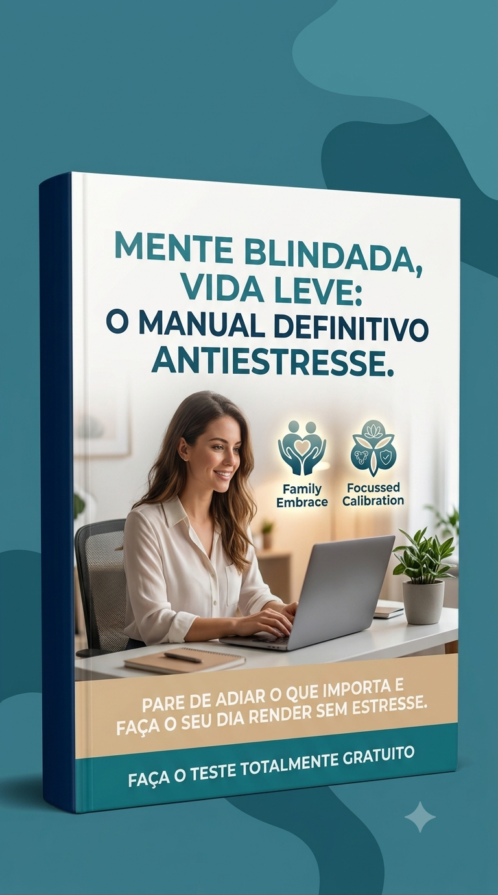

Faça o teste totalmente gratuito clicando diretamente na imagem para iniciar a sua análise preliminar.
💝 Avaliações Online — Faça o teste totalmente gratuito abaixo:
1. Teste do Crítico Interno (Autocobrança)
2. Teste de Sensibilidade Emocional

3. Teste da Mente Paralisada
Resultado da Análise Preliminar
Pontuação Total: 0
Nota Importante de Saúde Emocional: Esta triagem é uma análise estatística preliminar com objetivos puramente informativos e educativos. Ela não substitui, sob nenhuma hipótese, o parecer ou diagnóstico clínico de psicólogos, psiquiatras, terapeutas ou outros profissionais de saúde mental especializados.
🎁 Reconquiste a Leveza e a Blindagem Emocional
Aprenda estratégias baseadas em inteligência emocional e no controle comportamental para desarmar o seu crítico interno, parar de absorver o estresse dos outros e destravar de vez a sua produtividade.
📚 Mente Blindada, Vida Leve
Uma leitura super rápida, simples e direta, desenvolvida sob medida para você ler direto no seu celular. Descubra ferramentas criadas para remover todo o esgotamento do seu organismo, acalmar as cobranças internas e devolver a leveza ao seu cotidiano.